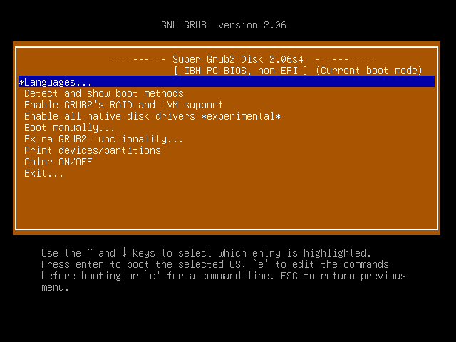

We believe security software like Kicksecure needs to remain Open Source and independent. Would you help sustain and grow the project? Learn more about our 14 year success story and maybe DONATE!
SysRqDocumentationTestPrevious page: SysRqIndex page: DocumentationNext page: TestBroken Boot
Start here. Identify where the boot process stops, then follow only the matching recovery path. This page contains multiple recovery methods; not every method applies to every boot failure.

The system or virtual machine (VM) is no longer booting?
This can be very difficult to analyze and difficult to fix. Asking in support forums might not result in helpful answers. Fixing this most likely requires being an advanced user or even a very advanced user.
What to do first

1 Identify where boot stops.
Check whether the failure happens before firmware, before GRUB, after GRUB, during early Linux boot, or after login manager startup.
2 Choose the matching symptom.
Use the quick diagnosis section to choose the first description that matches the problem.
3 Try only the relevant recovery method.
Avoid applying unrelated recovery steps, especially commands that modify disks, bootloaders, or firmware boot entries.
4 Ask for help if unsure.
If the correct path is unclear, ask for help before changing bootloader, disk, firmware, or encryption-related configuration.
Quick diagnosis
Choose the first description that matches your situation.
A. Power or firmware issue
A The computer does not power on, or firmware errors appear.
Use this path if the machine does not react normally to the power button, shows firmware-level errors, emits beep codes, or fails before Linux or GRUB messages appear.
See:
B. Bootloader not found
B The firmware cannot find Kicksecure or no boot menu appears.
Use this path if the system shows a message such as "No Operating System Found", enters a UEFI shell, boots the wrong operating system, or does not show the Kicksecure GRUB menu.
See:
C. GRUB appears, but Kicksecure does not start
C GRUB appears, but boot hangs, freezes, blackscreens, or drops to a prompt.
Use this path if the Kicksecure GRUB menu appears and the kernel starts, but the system does not reach a usable live system or installed system.
See:
D. Installed system needs repair
D Kicksecure is installed, but no longer boots.
Use this path when an installed Kicksecure system needs repair from a live ISO.
See:
E. Login or desktop failure
E The system reaches login or desktop startup, but the GUI fails.
Use this path if text-mode boot works, but graphical login, session startup, or desktop components fail.
See:
Troubleshooting
Use this section to identify where the boot process fails. Do not start with repair commands until the failure stage is known.
Boot failure is a general term for a broad range of conditions that prevent a system from becoming fully operational for general use after being powered on. The number of potential causes and resulting issues are far too large to cover here, but in practice most "boot failures" are caused by a select few issues. This page will attempt to help you find the reason your system is "failing to boot" and fix it.
This guide assumes a moderate level of proficiency in Linux use. If you do not feel comfortable attempting to repair your system yourself, see the "Getting Help" section below. Alternatively, you can Factory Reset Kicksecure by reinstalling it.
Note that this page assumes that the boot failure is not the result of a malware infection. If you suspect that your system has been compromised, the only safe solution is to reinstall all operating systems (including Kicksecure) that are installed on your device. See the download page for download and installation instructions for Kicksecure.
Triage
Triage means identifying the first part of the boot process that fails. This determines which recovery method is appropriate.
1 Check whether the machine powers on normally.
Look for signs of power, fan activity, keyboard lights, display backlight, beep codes, or other hardware-level behavior.
2 Check whether firmware finds a bootloader.
Determine whether the system reaches a firmware boot menu, reports no operating system found, enters a UEFI shell, or starts the wrong operating system.
3 Check whether GRUB appears.
If GRUB appears, firmware and bootloader discovery probably succeeded, and the problem is likely later in the boot process.
4 Check whether the kernel and initramfs start.
Look for Linux kernel messages, kernel panic output, an emergency shell, or a hang during early boot.
5 Check whether the system reaches login or desktop startup.
If text-mode login or the graphical login manager appears, the failure is likely in system service startup, login manager startup, or desktop startup.
The first step in debugging a boot failure is to determine what *exactly* has failed. All boot failures have in common that the system does not reach a working GUI where the user can begin working, however there are many places in the startup process that can break, and identifying which place has broken is very important.
The boot process goes through the following stages from power-on to a working system. Use this guide to determine which part of the boot process has most likely failed. Keep in mind that some issues may be difficult to pinpoint to any one particular part of the boot process. Even in those instances, having a general idea of the location of the issue is still very useful.
Show detailed boot process stages
- Power on
- This is the stage your system starts at when you first press the
power button. Power is applied to the various system components,
triggering each device's processor to load firmware and begin
processing.
- Failures in this stage of the boot process are always the result of hardware or firmware damage, and typically manifest as:
- The system is entirely unresponsive to a power button press (no lights turn on, no fans spin up, screen backlight does not power on)
- The system's fans spin up when the power button is pressed and the power light may even come on, but there is no drive activity and the screen backlight doesn't come on
- Lights on the keyboard or elsewhere on the system are blinking in regular patterns that you haven't seen before, lights on the system turn strange colors, or you hear beeps emitted from the system speaker
- This is the stage your system starts at when you first press the
power button. Power is applied to the various system components,
triggering each device's processor to load firmware and begin
processing.
- BIOS / Firmware
- Once the CPU is partially operational, it begins running system
firmware. This code initializes your hardware, then searches for a
bootloader and runs it.
- Failures in this stage of the boot process can be hardware-related or configuration-related. Typical problems at this point are:
- Error messages are shown on the screen early in the boot process, and these errors do not appear to be Linux kernel logs or bootloader errors
- Once the CPU is partially operational, it begins running system
firmware. This code initializes your hardware, then searches for a
bootloader and runs it.
- Bootloader discovery and launch
- After initializing the hardware, the firmware searches for a bootloader to run. The way in which this is done varies from machine to machine.
- Older systems with legacy BIOS firmware check all drives in the
system in a specific order, looking at the "boot sector" of the drive to
determine if it looks like a bootloader or not. The first valid boot
sector found is loaded and executed.
- Issues with bootloader discovery and launch on BIOS systems typically manifest as a "No Operating System Found" error message. If a machine has multiple operating systems installed or present, it's also possible for the wrong OS to boot.
- Newer systems with UEFI firmware have a list of installed
bootloaders stored in non-volatile memory (NVRAM) that is embedded into
the hardware. Each bootable disk has an EFI System Partition (ESP) that
stores each installed bootloader as a set of files on the disk. The
firmware uses the list of bootloaders stored in NVRAM to locate the
desired bootloader to run. If a bootloader in the list is not
accessible, the firmware proceeds to the next bootloader in the list. If
no valid installed bootloaders are found, the firmware then probes for a
"fallback" bootloader installed on any of the disks, searching the disks
in a specific order and loading the first valid fallback bootloader it
finds.
- Issues with bootloader discovery and launch on UEFI systems can manifest in a number of different ways. Some systems will show a "No Operating System Found" message and shut down, some will allow you to insert a bootable drive and retry boot, some will give you an opportunity to enter a firmware setup mode, and some might drop you to a UEFI shell. It's also possible for the wrong OS to boot if the system has multiple operating systems installed.
- Kernel / initramfs discovery and kernel launch
- Once the firmware has loaded and executed the bootloader (usually
GRUB), it will then proceed to find, load, configure, and launch the
operating system's kernel and initramfs. The kernel is a core component
of the operating system, acting as an interface between the system's
hardware and software. The initramfs is a small, compressed bundle of
files that assist the kernel in locating and booting the rest of the OS.
The bootloader will usually use a configuration file to locate the
kernel and initramfs. If there are multiple operating systems installed,
it may also display a boot menu allowing the user to choose their
desired operating system.
- Issues with kernel / initramfs discovery and kernel launch typically result in the user being dropped to a GRUB shell. This is a rescue environment from which the user can find and load the operating system themselves. You may also be shown an error message such as "error: you need to load the kernel first". These issues are usually the result of a missing or damaged bootloader configuration file.
- Once the firmware has loaded and executed the bootloader (usually
GRUB), it will then proceed to find, load, configure, and launch the
operating system's kernel and initramfs. The kernel is a core component
of the operating system, acting as an interface between the system's
hardware and software. The initramfs is a small, compressed bundle of
files that assist the kernel in locating and booting the rest of the OS.
The bootloader will usually use a configuration file to locate the
kernel and initramfs. If there are multiple operating systems installed,
it may also display a boot menu allowing the user to choose their
desired operating system.
- Hardware preparation
- Once the kernel is loaded, it will initialize itself, and
(re)initialize some of the hardware on the machine. This allows any
software executed thereafter to run in a known-good, predictable
environment without having to take special hardware considerations into
account in most instances.
- Issues with kernel hardware preparation generally manifest as a cryptic kernel panic during early boot. These issues are usually the result of a hardware problem or kernel bug.
- Once the kernel is loaded, it will initialize itself, and
(re)initialize some of the hardware on the machine. This allows any
software executed thereafter to run in a known-good, predictable
environment without having to take special hardware considerations into
account in most instances.
- Initramfs launch
- The kernel will then load and execute an
initapplication from the initramfs, usually called located at/sbin/init.- Initramfs launch problems usually manifest as a kernel panic stating that the root filesystem could not be mounted, or that there is "no working init found". This is usually the result of faulty kernel configuration in the bootloader's config file.
- The kernel will then load and execute an
- Root filesystem discovery and handoff
- The
initexecutable's job is to orchestrate other executables on the initramfs to locate, decrypt if necessary, and mount the operating system's root partition. Once the root partition is found and mounted, the initramfs filesystem is wiped, the system "pivots" to the real root filesystem, and finally the/sbin/initexecutable on the real root filesystem is loaded, replacing theinitexecutable from the initramfs.- Issues with root filesystem discovery and handoff usually result in the user being dropped to an "emergency shell". This shell allows access to the "mini OS" present in the initramfs, and is mainly useful for debugging why the boot process failed at this stage. One can oftentimes find the proper root filesystem themselves, mount it, and then exit the emergency shell to finish the boot process if things get hung up here. It's also possible for a root FS discovery failure to result in the boot process hanging indefinitely.
- The
- System service startup
- The
initexecutable from the root filesystem now looks at various configuration files on the system, and uses the info in them to mount additional partitions, configure and launch system services, and eventually launch the login manager. Services are executed in stages so that when each service starts, any prerequisite services it needs are already started.- Issues with system service startup can manifest in a large number of different ways. Commonly one will be dropped to an "emergency mode" shell (distinct from the "emergency shell" from the root filesystem discovery stage), or the boot process will hang indefinitely with some services shown as being in a "FAILED" state.
- The
- Login manager startup
- Once most system services are operational, the
initexecutable launches a GUI login manager and a number ofloginprocesses for text-mode login. If the system reaches this point successfully, most users will consider the boot to be successful even if things don't quite work right thereafter.- Issues with login manager startup usually result in the user being able to login only at a text-mode console. The login manager can also get stuck in a restart loop, preventing the user from logging in even that way.
- Once most system services are operational, the
- Desktop startup
- Once the user logs in, or if autologin is configured, the graphical
login manager will run the set of programs the user sees at the
"desktop". This includes a "panel" (on Kicksecure this is the task bar
at the top of the screen), a "desktop" (the program that displays a
wallpaper and shows your desktop icons), and a number of smaller
services and applets that complete the desktop experience. From here the
user can launch and use applications.
- Issues with desktop startup can manifest in a large number of different ways. The user may be unable to graphically log in, or important desktop components may be missing or behave erratically.
- Once the user logs in, or if autologin is configured, the graphical
login manager will run the set of programs the user sees at the
"desktop". This includes a "panel" (on Kicksecure this is the task bar
at the top of the screen), a "desktop" (the program that displays a
wallpaper and shows your desktop icons), and a number of smaller
services and applets that complete the desktop experience. From here the
user can launch and use applications.
Fixing the problem
Once the failed boot stage is known, use only the matching section below. Some fixes are harmless tests, while others modify bootloader or disk configuration.
Once you have located the step of the boot process that has failed, you can attempt to fix the issue. The following are some common problems, and how to resolve them.
- Power on
- Potential problem: RAM failure
- The hardware can act very erratically or fail to work at all if one or more RAM modules have failed. If your system has user-replaceable RAM, and you have more than one RAM module installed, try removing all but one of them, then attempt to boot again. If this does not have any effect on observed symptoms, try removing the last RAM module and inserting one of the others in its place. If none of the available RAM modules work when installed alone, the issue is probably not RAM-related.
- Potential issue: Core hardware failure
- Many of the components on modern systems cannot be replaced easily. If one of them fails, the system may become unusable and irreparable.
- Potential problem: RAM failure
- BIOS / Firmware
- Potential problem: Bad BIOS configuration option
- The firmware on most computers has a large array of options one can enable or disable. Blindly changing these options is not a good idea. However, if you see an error message describing a particular component of the system as being unusable or misconfigured, there may be a firmware setting you can change to resolve the issue.
- Potential problem: Bad BIOS configuration option
- Bootloader
discovery and launch
- Potential problem: Overwritten boot information
- Some activities will overwrite a disk's boot files or modify the NVRAM operating system list. Reinstalling the bootloader or installing an additional operating system usually will do this. This oftentimes works as intended, but it is possible for the firmware to not be able to locate boot files any longer after this. If this occurs, you can boot from a USB drive, chroot into your original operating system (if it is still available), and reinstall the bootloader from there. See the Chroot Boot Recovery section below for instructions.
-
Potential problem: UEFI firmware fails to pick up Kicksecure boot
entry
- It is possible for some systems to fail to add a boot entry for Kicksecure to the NVRAM. When this happens booting the Kicksecure installation can be difficult. See Chroot Boot Recovery below for instructions to resolve this.
- If the system's firmware has a "Boot From File" option, you can boot
Kicksecure manually by booting from
hard drive ID\EFI\Kicksecure\shimx64.efi. This may be easier than chrooting into the system. Then follow the repair steps for UEFI firmware fails to pick up Kicksecure boot entry below, from within the booted system.
- Potential problem: Overwritten boot information
- Kernel / initramfs discovery and kernel launch
- Potential problem: Incorrect partition UUIDs in bootloader
configuration
- If you repartition your disk, or clone a partition, it is possible and even easy to end up with partitions that are perfectly valid but that the bootloader is not configured to find. This can usually be fixed by rebuilding the bootloader configuration. See the Chroot Boot Recovery section below for instructions.
- Potential problem: GRUB is unable to see the operating system's
drive
- Sometimes GRUB or the system's firmware will lack the proper drivers to access the drive on which the OS is installed. This can happen if an NVMe drive is installed into a system that did not originally have an NVMe slot on the motherboard. In this instance, you will not be able to boot the system if the kernel and initramfs are located on the OS's drive. The best way to resolve this issue is usually to use manual partitioning when installing Kicksecure, placing the boot partition on a drive that GRUB can access and placing the rest of the OS on the desired drive.
- Potential problem: Incorrect partition UUIDs in bootloader
configuration
- Hardware preparation
- Potential problem: Intel RST is enabled on the OS's drive
- Systems featuring 10th-gen Intel processors oftentimes have a feature known as Rapid Storage Technology (RST). Such systems are oftentimes advertised as having "Intel Optane" technology. Intel RST is incompatible with the Linux kernel, and the kernel developers have intentionally not added support for it. The best solution to this issue is usually to go into the system's firmware settings, find the settings for the drive the OS is installed on, and ensure it is not set to "RAID" mode. If it is, change it to "AHCI" if possible. This will resolve the issue. Note that if you have an installation of Windows already present on the drive, switching from RAID to AHCI mode or vice versa may cause Windows to become unbootable.
- Potential problem: Intel RST is enabled on the OS's drive
- Initramfs launch
- Potential problem: Initramfs was not loaded by bootloader
- If the initramfs is missing entirely or the bootloader is not properly configured to find it, it will not be loaded during boot and the kernel will not be able to use it. See the Chroot Boot Recovery section below for instructions to fix this.
- Potential problem: Initramfs was not loaded by bootloader
- Root filesystem discovery and handoff
- Potential problem: Corrupted or incorrect root UUID kernel
parameter
- If the
root=kernel parameter does not point to the proper filesystem, the initramfs will be unable to find it and will drop you to an emergency shell. This can happen if you clone your root filesystem by copying everything on it to another partition or disk. The easiest way to fix this is by using the steps in the the Chroot Boot Recovery section below.
- If the
- Potential problem: Incorrectly named filesystem in crypttab
- On encrypted systems, the
/etc/crypttabfile assigns a specific device name to each encrypted partition that is decrypted at bootup./etc/fstabis then supposed to mount those devices as appropriate. The device names must match between the two files or else the system will not be able to mount all encrypted filesystems properly. Furthermore, the crypttab file must be embedded into the initramfs properly. If these conditions are not met, the system will fail to boot. To fix this, use the steps in the Chroot Boot Recovery section below.
- On encrypted systems, the
- Potential problem: Corrupted or incorrect root UUID kernel
parameter
- System service startup
- Potential problem: Hardware is incompatible with latest
kernel
- If the machine hangs during system service startup with some failed
services, and you just recently updated your software, it is possible
that a new kernel was installed that is incompatible with your hardware.
To boot from an earlier kernel, reboot the machine, then on the boot
menu select
Advanced options for Kicksecure. You will see a list of available kernels to boot from. Select an older kernel to boot from, taking care to not use a(recovery mode)option. (Recovery mode boots the system into an emergency shell and will usually not be useful in this particular scenario.)
- If the machine hangs during system service startup with some failed
services, and you just recently updated your software, it is possible
that a new kernel was installed that is incompatible with your hardware.
To boot from an earlier kernel, reboot the machine, then on the boot
menu select
- Potential problem: Important system software was uninstalled
- If you recently removed an important software component from your system, it can result in system service startup failing. See the Chroot Boot Recovery section below for instructions on how to resolve this.
- Potential problem: Hardware is incompatible with latest
kernel
- Login manager startup
- Potential problem: Login screen is displayed and attempting to
log in immediately drops you back to the login screen again
- This issue is typically the result of a misconfigured login manager.
You may be able to resolve the issue by using
sudo apt-get install --reinstall greetd wlgreet.
- This issue is typically the result of a misconfigured login manager.
You may be able to resolve the issue by using
- Potential problem: Login screen is displayed and attempting to
log in immediately drops you back to the login screen again
sudo apt-get install --reinstall greetd wlgreet
- Desktop startup
- Potential problem: Graphics driver issues
- Your desktop might not load or may behave erratically if your
system's graphics drivers are not working properly with your graphics
hardware. You can try to boot with safe graphics mode to see if this is
a likely issue. To do this, when Kicksecure's boot menu appears, press
eto edit the boot options. Move the cursor down to the line that starts withlinux, then move your cursor to immediately after theroargument and typenomodeset, ensuring that the newly added option is separated from surrounding options with at least one space on each side. Then press Ctrl+X to boot.
- Your desktop might not load or may behave erratically if your
system's graphics drivers are not working properly with your graphics
hardware. You can try to boot with safe graphics mode to see if this is
a likely issue. To do this, when Kicksecure's boot menu appears, press
- Potential problem: Graphics driver issues
GRUB appears, but Kicksecure live USB does not start
Use this section when the Kicksecure live USB reaches GRUB, but boot hangs, freezes, shows a black screen, or drops to a prompt before the live system starts. This is different from repairing an installed system.
1 Confirm that GRUB appears.
This test applies only if the Kicksecure live USB reaches the GRUB boot menu.
2 Edit the selected GRUB boot entry temporarily.
The edit affects only the current boot attempt unless the bootloader configuration is later changed permanently.
3 Test whether Kicksecure-specific boot parameters are involved.
Remove extra kernel parameters only for this temporary diagnostic boot attempt.
4 Report the result if the test changes the boot behavior.
If the system boots differently after the edit, include that result when asking for support.
 This is a temporary diagnostic boot test. Removing Kicksecure kernel
command line options may disable security hardening for that boot only.
Do not use this as a permanent configuration.
This is a temporary diagnostic boot test. Removing Kicksecure kernel
command line options may disable security hardening for that boot only.
Do not use this as a permanent configuration.
Show live ISO GRUB boot parameter diagnostic test
- Boot from the Kicksecure live USB.
- At the GRUB menu, highlight the boot entry to test.
- Press
eto edit the entry. - Find the line that starts with
linux. - On that line, remove extra kernel parameters before the live-boot parameters.
- Keep the live-boot parameters required for the live ISO to find its filesystem.
- Press
Ctrl+Xto boot with the edited parameters.
The purpose of this test is to determine whether one of the additional Kicksecure kernel command line options causes the boot failure on specific hardware or firmware.
Chroot Boot Recovery
Use this only when repairing an installed Kicksecure system from a live ISO. This is usually not the right section for a live USB that itself fails to boot.
Many of the boot issues mentioned in this document can be solved by chrooting into the broken system. From here you can regenerate boot configuration data and modify incorrect configuration files. You will need a live Kicksecure ISO for this procedure, see the download page for guidance on how to obtain one and prepare it for use.
 Replace placeholder device names such as
Replace placeholder device names such as sdX,
sdXY, and Y with the correct disk or
partition. Do not blindly copy commands that modify bootloader or disk
configuration.
Show Chroot Boot Recovery instructions
- Boot the affected system from the live ISO.
- On physical hardware, flash the ISO to a USB drive and boot the machine from the USB drive.
- On virtual hardware (VirtualBox or KVM), configure the virtual machine to use the Kicksecure ISO file as a virtual CD-ROM, and set the ISO file to be at the top of the boot order.
- Open a terminal using Ctrl+Alt+T.
- Run
lsblkto view the drives and partitions in the system. The partition containing Kicksecure's root filesystem should be recognizable by size.
lsblk
- Mount Kicksecure's root filesystem using
sudo mount /dev/sdXY /mnt, replacingsdXYas appropriate.
sudo mount /dev/sdXY /mnt
- Determine which partition contains Kicksecure's boot filesystem
(which is always separate from the root filesystem). Mount it using
sudo mount /dev/sdXY /mnt/boot, again replacingsdXYas appropriate.
sudo mount /dev/sdXY /mnt/boot
- If the system uses UEFI firmware, there will be an additional, small
fat32 partition near the beginning of the drive Kicksecure is installed
onto. Mount it using
mount /dev/sdXY /mnt/boot/efi, again replacingsdXYas appropriate.
sudo mount /dev/sdXY /mnt/boot/efi
- Bind-mount several system directories into
/mntso that recovery tools will work:sudo mount --bind /dev /mnt/devsudo mount --bind /dev/pts /mnt/dev/ptssudo mount --bind /proc /mnt/procsudo mount --bind /sys /mnt/sys
sudo mount --bind /dev /mnt/dev sudo mount --bind /dev/pts /mnt/dev/pts sudo mount --bind /proc /mnt/proc sudo mount --bind /sys /mnt/sys
- Run
chroot /mntto enter the chroot environment. Commands you run at this point will act as if you were running them on the installed system.
sudo chroot /mnt
- Depending on which boot issue you are attempting to resolve, you may
have to modify some configuration files before regenerating boot data.
-
UEFI firmware fails to pick up Kicksecure boot entry
- Determine the disk containing Kicksecure's EFI system partition, then determine which partition on the disk is the EFI system partition.
- Run
efibootmgr -c -d /dev/sdX -p Y -L 'Kicksecure' -l 'EFI\Kicksecure\shimx64.efi', replacingsdXwith the device name of the disk containing the Kicksecure installation, and replacingYwith the partition number of the EFI system partition. This should add a Kicksecure boot entry to your UEFI NVRAM.
-
UEFI firmware fails to pick up Kicksecure boot entry
efibootmgr -c -d /dev/sdX -p Y -L 'Kicksecure' -l 'EFI\Kicksecure\shimx64.efi'
- Incorrectly named filesystem in crypttab
- Run
nano /etc/crypttab. For each entry in the file (usually there will only be one), copy down the first field (the filesystem name) and paste it into a Mousepad text document. Close the file with Ctrl+X, then runnano /etc/fstab. Check all fstab lines that point to a filesystem under/dev/mapperand ensure that the names shown in those fstab lines match those shown in the crypttab file.
- Run
- Incorrectly named filesystem in crypttab
nano /etc/crypttab nano /etc/fstab
- Important system software was uninstalled
- Reinstall any important packages you uninstalled previously, using
apt install. You can check your apt history log at/var/log/apt/history.logto see what packages you may have uninstalled recently.
- Reinstall any important packages you uninstalled previously, using
- Important system software was uninstalled
apt install package-name less /var/log/apt/history.log
- After completing any necessary prerequiste steps from above,
regenerate boot information.
- Reinstall the bootloader by running
grub-install /dev/sdXYreplacingsdXYas appropriate. - Regenerate GRUB's configuration file by running
update-grub. - Regenerate all initramfs files on the system by running
dracut --regenerate-all --force.
- Reinstall the bootloader by running
grub-install /dev/sdX update-grub dracut --regenerate-all --force
- After running the above commands, exit the chroot environment by
running
exit.
exit
- Shut down the system and remove the Kicksecure live ISO. Then power the system back on. If all goes well, Kicksecure should now boot successfully.
Boot Recovery Tools
Boot recovery tools can help start or repair a system when the normal boot path is broken. These tools should be chosen according to the failure mode identified above.
There are several tools that can be useful for fixing or working around broken boot issues. The following is not an endorsement or recommendation of any particular tool.
Super Grub2 Disk
Website: https://www.supergrubdisk.org/super-grub2-disk/
Super Grub2 Disk is a highly flexible bootable GRUB-based tool that can be used for booting operating systems in a number of different ways. It is primarily useful for getting a system to boot even when the bootloader is broken or misconfigured. Unlike many recovery utilities, Super Grub2 Disk is not a Linux distribution. It is simply a GRUB bootloader paired with a number of very powerful configuration files that use GRUB's built-in scripting language.
Installation
Super Grub2 Disk can be downloaded from https://www.supergrubdisk.org/category/download/supergrub2diskdownload/super-grub2-disk-stable/.
Digital software signature verification.
 This software installation might be a security risk. Installation is
discouraged, following the recommended best practices for software
installation:
This software installation might be a security risk. Installation is
discouraged, following the recommended best practices for software
installation:
Unsigned software: You cannot follow the usual security advice to always verify software signatures, because - as far as the author of this page knows - at the time of writing, the original developer (upstream) does not provide digital signatures for their software. Users may wish to check if that has changed or consider requesting this feature from the developer.
It is recommended to use the first download in the list of USB bootable images, as this image is bootable on both old and new systems.
Once you have downloaded Super Grub2 Disk, you can verify it, unzip it, and flash it to a USB drive. The following commands can be used to do this. Note that your download location, file name, and device ID may differ from those shown here, thus you should adjust these commands as appropriate. Do NOT blindly copy and paste this code into a terminal!
Show Super Grub2 Disk installation commands
cd ~/Downloads sha256sum supergrub2-2.06s4-multiarch-USB.img.zip
- Compare the checksum displayed in your terminal with the file's
- checksum listed in the SHA256SUMS section of the download page
- If it looks right, proceed
unzip supergrub2-2.06s4-multiarch-USB.img.zip
- Replace "sdX" with your USB drive's device ID
sudo dd if=./supergrub2-2.06s4-multiarch-USB.img of=/dev/sdX bs=4M sync
Super Grub2 Disk is now installed.
Usage
Insert your Super Grub2 Disk USB drive into the computer you wish to boot, then boot the system from the USB drive. You will be shown the Super Grub2 Disk user interface.

To find available operating systems on the computer, use the arrow keys to select "Detect and show boot methods", then press Enter and wait for OS autodetection to complete. You will be shown a list of boot options.
The Super Grub2 Disk boot menu provides a large number of options for loading operating systems in various different ways. This guide will cover four of the provided methods. Which method to use depends on what hardware you are using and how badly the system is broken.
Direct Linux boot
- Direct Linux boot
- The direct Linux boot options are listed under the
LinuxandLinux from /boot partitionsections. These options will load the selected Linux kernel and its corresponding initramfs, point the kernel at the correct drive to boot from, and then boot it. The drive to boot from is automatically detected by parsing the/etc/fstabfile from the Linux installation. - This option is mainly useful if your system's boot data is entirely broken or missing. It does not rely on the installed system's boot configuration at all, so it can work to boot the system when nothing else will. However, you should usually not use this boot method, as it will not enable the large number of security options Kicksecure enables via Linux command line options. This leaves you more open to malware and other security threats.
- This boot method only works on unencrypted systems. In order to know
which partition Linux should use as the root partition, it has to parse
the
/etc/fstabfile from the installed system. This is impossible when the system is encrypted. - To boot an OS using direct Linux boot, select one of the displayed
kernels in the appropriate section, and press Enter. Usually the kernels
will be named something like
/vmlinuz-6.1.0-26-amd64. There are also( recovery )and( single )options underneath each kernel. The( recovery )option will work to boot into recovery mode on systems such as Ubuntu. For other operating systems (including Kicksecure), the( single )option can be used to boot into rescue mode. See Recovery.
- The direct Linux boot options are listed under the
GRUB configuration chaining
- GRUB configuration chaining
- The GRUB configuration chaining options are listed under the
Entries from...andgrub.cfg - (GRUB2 configuration files)sections. These options will load boot entries from the installed system's GRUB configuration files, allowing you to boot one of these entries. - This option is recommended for most use cases. All of Kicksecure's kernel command line options will be enabled, since the GRUB configuration where these settings are embedded will be used. This greatly improves security on Kicksecure.
- This boot method works on both BIOS and UEFI systems, regardless of whether they are encrypted or unencrypted. However, it only works if the installed system has a working GRUB configuration. If your bootloader is corrupted or damaged but your GRUB configuration is still intact, this will work, but if your GRUB configuration is damaged or incorrect, this may not work.
- To boot an OS using GRUB configuration chaining, select the desired
boot option underneath one of the
Entries from...headers. For Kicksecure, the entry to use will usually beKicksecure GNU/LinuxorLIVE mode USER (For daily activities.) GNU/Linux. Alternatively, find the desired grub.cfg file under thegrub.cfg - (GRUB2 configuration files)section, select it, and press Enter. If you are shown another boot menu, select your desired boot option.
- The GRUB configuration chaining options are listed under the
BIOS chainloading
- BIOS chainloading
- The BIOS chainloading options are listed under the
Disks and Partitions (Chainload)section. These options will load and execute whatever happens to be in the boot sector of the selected device or partition. Assuming the selected device or partition has a bootloader installed, this will run that bootloader. - This option is only really useful if your system's BIOS settings are misconfigured. The system needs to have a bootloader installed and configured properly for this option to work. If Kicksecure installed successfully but the system reports "No operating system found" upon reboot, this option may be useful to work around the problem.
- This boot method only works on BIOS systems. The boot process on UEFI systems works in a fundamentally different way that doesn't involve boot sectors. Super Grub2 Disk will display an error message if you try to use BIOS chainloading on a UEFI system. This boot method works with both encrypted and unencrypted systems.
- To boot an OS using BIOS chainloading, navigate to the
Disks and Partitions (Chainload)section, select your desired device or partition, and press Enter. The bootloader from that device or partition will run. This will either immediately boot an OS, or, in the case of Kicksecure, display a list of boot options. Note that to boot Kicksecure with BIOS chainloading, you must select either the "boot" partition, or the device containing the "boot" partition. Attempting to chainload the "rootfs" partition will result in an "invalid signature" error message.
- The BIOS chainloading options are listed under the
UEFI chainloading
- UEFI chainloading
- The UEFI chainloading options are listed under the
EFI files on EFI partitionssection. These options will execute a UEFI executable of your choice. Usually this executable will be a UEFI bootloader of some sort. - All of the caveats of BIOS chainloading apply.
- This boot method only works on UEFI systems. It is essentially the UEFI equivalent of BIOS chainloading, although it works in a very different manner under the hood. This boot method works with both encrypted and unencrypted systems.
- To boot an OS using UEFI chainloading, navigate to the
EFI files on EFI partitionssection. You will be shown a list of EFI system partition directories, and the EFI executables available underneath them. Find the directory that corresponds to the OS you wish to load (for instance,/efi/Kicksecure), then select theshimx64.efifile from the list of files in that directory. Ifshimx64.efidoes not exist, selectgrubx64.efiinstead. If that doesn't exist either, you're either using a non-GRUB bootloader, or your bootloader is misconfigured somehow, in which case you should probably try using one of the other boot methods. As a last resort, you can try booting the/efi/boot/bootx64.efifile if it exists. Do not attempt to boot from any files namedmmx64.efi[1] orfbx64.efi[2] unless you know what you're doing.
- The UEFI chainloading options are listed under the
Booting ISO Files
In addition to the above features, Super Grub2 Disk can be used to boot ISO files that are compatible with loopback booting. When properly set up, loopback booting allows you to boot an ISO file directly, rather than having to flash it to a storage device first. This is done in GRUB by mounting the ISO file as a device, then loading the loopback.cfg file from it. This file contains configuration settings that are then be used to load the kernel and initramfs from the ISO. The kernel is passed a command line parameter that allows the initramfs to find the ISO, attach it as a device, and boot the rest of the OS from it. For further details, see https://www.supergrubdisk.org/wiki/Loopback.cfg.
Not all ISO files can be booted this way. In particular, Kicksecure's ISO does not currently support loopback boot. Much of the work needed to get loopback boot working has been done, but it is still a work in progress and not ready for general use. Windows ISOs also cannot be booted in this way.
Super Grub2 Disk provides a partition with a directory called
"BOOTISOS". You can save ISO files here in order to boot them with Super
Grub2 Disk. By default, this partition is much too small to contain most
ISO files. To fix this, use the GParted program to resize the Super
Grub2 Disk USB drive's second partition so that it uses the full space
available on the USB drive. You can install GParted on Kicksecure by
running sudo apt install gparted. You will also need the
fatresize tool, which GParted will use under the hood to resize the
filesystem. This can be installed by running
sudo apt install fatresize.
sudo apt install gparted fatresize
Once the partition is large enough to contain your ISO files, simply mount it and copy your desired ISO files to the BOOTISOS directory on the drive. Note that the ISO storage partition is formatted with the fat32 filesystem, meaning it will not support ISO files larger than 4 GiB in size.
To boot one of these ISOs, boot the Super Grub2 Disk drive, and
select "Detect and show boot methods". All loopback bootable ISO files
saved in this the "BOOTISOS" directory will be detected and displayed in
the Bootable ISOs (in /boot-isos or /boot/boot-isos)
section. Select the ISO you wish to boot, and press Enter.
Getting Help
If you are unsure which recovery path applies, ask for help before running commands that modify disks, bootloaders, or firmware boot entries.
If you are not comfortable attempting to repair your system by yourself, you can ask for help via Kicksecure's support forum at https://forums.kicksecure.com/.
Additional Resources
The following Wiki pages may have useful information:
Footnotes
mmx64.efiis the MokManager utility, usually used for configuring Secure Boot settings. This tool doesn't do anything useful if booted manually in most instances. The only times it is useful are when you are configuring a Secure Boot key for signing self-compiled kernel modules. When that happens, MokManager should automatically be booted into when necessary.fbx64.efiis the fallback bootloader, usually copied tobootx64.efi. It will rebuild your UEFI boot variables using anybootx64.csvfiles it can find in your system's EFI system partitions. This can be useful for boot recovery, but generally the system will boot this automatically if it becomes necessary.
Categories: Documentation